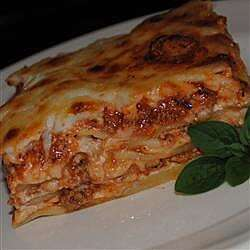

Lasagna

Description
Lasagne are a type of pasta, possibly one of the oldest types,
made of very wide, flat sheets. Either term can also refer to an
Italian dish made of stacked layers of lasagne alternating with fillings
such as ragù (ground meats and tomato sauce), vegetables, cheeses (which may include ricotta,
mozzarella, and parmesan), and seasonings and spices, like Italian
seasoning, such as garlic, oregano and basil.[3] The dish may be topped
with grated cheese, which becomes melted after baking.
Typically cooked pasta is assembled with the other ingredients and then
baked in an oven. The resulting casserole is cut into single-serving square portions.
Ingredients
- 2 teaspoons extra virgin olive oil
- 1 pound ground beef chuck
- 1/2 medium onion, diced (about 3/4 cup)
- 1/2 large bell pepper (green, red, or yellow), diced (about 3/4 cup)
- 2 cloves garlic, minced
- 1 (28-ounce)can good-quality tomato sauce
- 3 ounces tomato paste (half a 6-ounce can)
- 1 (14 ounce) can crushed tomatoes
- 2 tablespoons chopped fresh oregano, or 2 teaspoons dried oregano
- 1/4 cup chopped fresh parsley (preferably flat leaf), packed
- 1 tablespoon Italian seasoning
- 1 pinch garlic powder and/or garlic salt
- 1 tablespoon red or white wine vinegar
- 1 tablespoon to 1/4 cup sugar (to taste, optional)
- Salt
- 1/2 pound dry lasagna noodles (requires 9 lasagna noodles - unbroken)
- 15 ounces ricotta cheese
- 1 1/2 pounds (24 ounces) mozzarella cheese, grated or sliced
- 1/4 pound (4 ounces) freshly grated Parmesan cheese